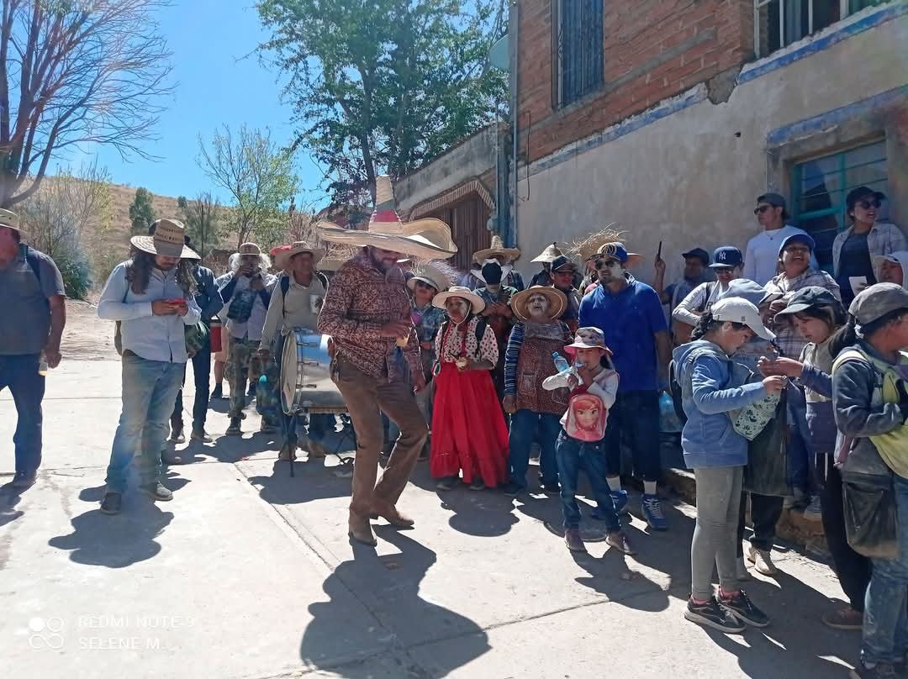
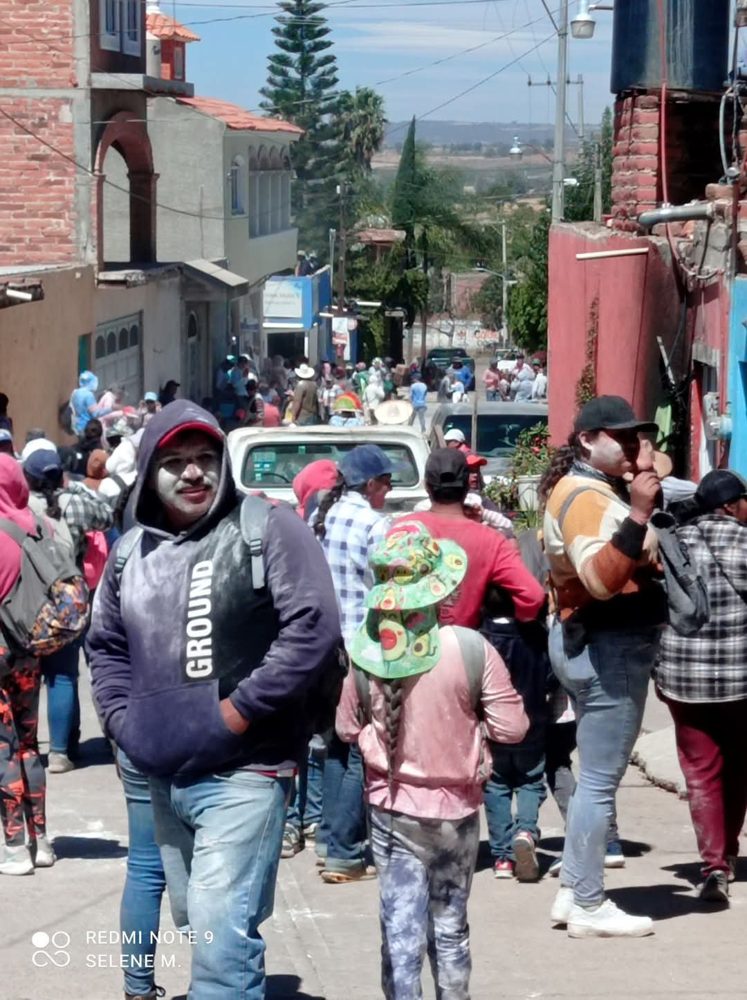
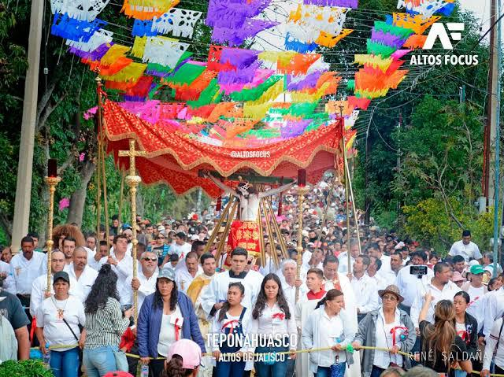
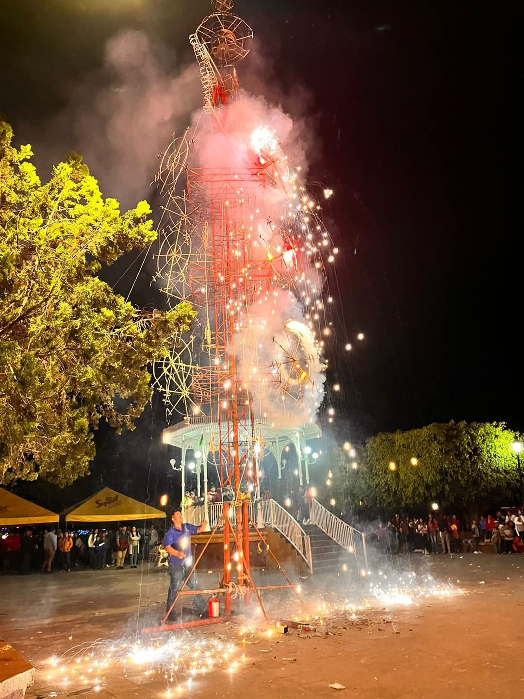

Calendario Cultural
Descubre las fiestas tradicionales que llenan las calles de vida, música y color.
- 🎉 Carnaval de cuarezma
- 🕯 Visita cada viernes al santuario del señor de teponahusco
- 🌾 Romeria del señor de teponahuasco
- 🎉 Fiestas patronales del señor de teponahuasco
Como la mayoría de los carnavales, el de Teponahuasco se celebra en los días previos al Miércoles de Ceniza, marcando el inicio de la Cuaresma. Esto significa que las fechas varían cada año, ya que dependen del calendario litúrgico y de cuándo cae la Semana Santa.
 Las visitas de cada viernes son una tradición arraigada y muy significativa para sus fieles. Tradicionalmente, el viernes es el día de la semana dedicado a conmemorar la Pasión y Muerte de Jesucristo en la fe católica. Muchos fieles visitan el santuario cada viernes como parte de una promesa hecha al Señor de Teponahuasco a cambio de algún favor recibido, Se acercan para pedir por la salud, el bienestar de sus familias, protección en sus viajes, o para agradecer milagros.

La Romería de Teponahuasco es una de las tradiciones religiosas más significativas del municipio de Cuquío, en el estado de Jalisco, México. Esta romería se celebra dos veces al año y tiene como protagonista al Señor de Teponahuasco, una venerada imagen de Cristo crucificado.
Las fiestas patronales de Teponahuasco, una comunidad del municipio de Cuquío, Jalisco, son una manifestación profunda de fe y tradición que se celebra anualmente en honor al Señor de Teponahuasco, una venerada imagen de Cristo crucificado.
